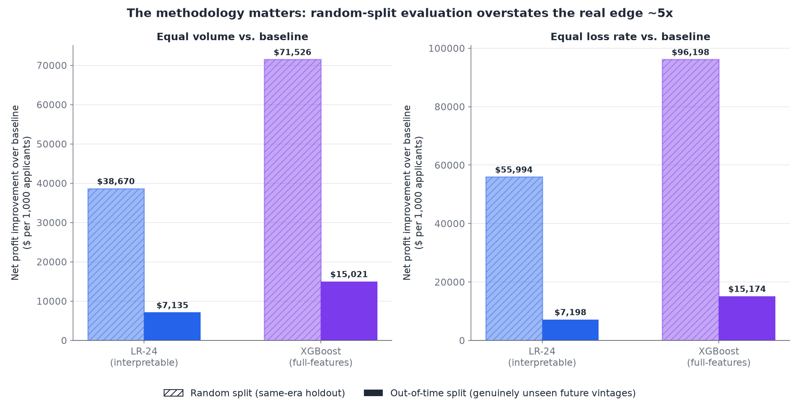
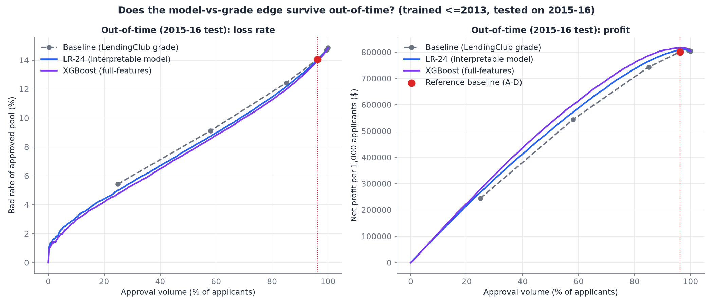
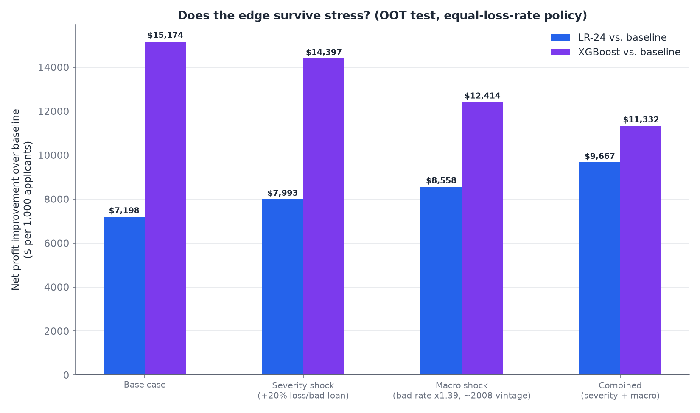
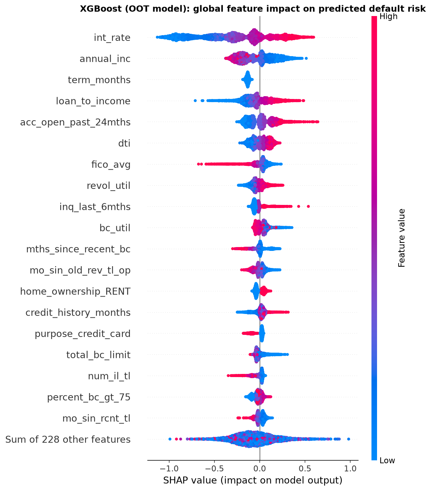

Net business impact vs. the baseline
Net profit per 1,000 applicants, out-of-time test set (2015–2016 vintages), at each policy's equal-loss-rate operating point — same risk tolerance as today, more approved volume.
Full stress-testing and methodology behind these numbers is further down this page, and in STEP8_BUSINESS_CASE.md.
Explore the applicants yourself
A 5,000-applicant sample of the out-of-time test set (2015–2016 vintages, never trained on). Filter by score, grade, or loan purpose; switch between models; look up individual applicants and their SHAP reason codes.
Score distribution
Calibration (predicted vs. actual, by decile)
| Grade | Predicted PD | Outcome | Net $ | Int. rate | DTI | FICO | Purpose |
|---|
The question, precisely
Two candidate policies were built to replace grade-only bucketing: LR-24, a 24-feature logistic regression a credit committee can review line by line, and XGBoost, a 247-feature ensemble with materially better discrimination but a harder governance story. Both were scored against a grade-A–D baseline — LendingClub's own current-practice proxy — on two axes: at the same approval volume, does the model find a lower default rate? At the same default rate, does it approve more volume?
The answer to both is yes, for both models — but by how much depends entirely on how you evaluate it, which is the actual headline finding covered next.
The methodology matters more than the model
Every model in this project was first evaluated on a random train/validation/test split — loans from every origination year scattered across all three. That tests generalization to held-out loans, never to a held-out time period. A live deployment doesn't get that luxury: it trains on history and predicts into a future it hasn't seen.
Rebuilding the entire comparison on a chronological split — train through 2013, validate on 2014, test purely on 2015–2016 — changes the conclusion's magnitude substantially, though not its direction.

Why the shrinkage is real, not a bug: the out-of-time test population's own baseline already sits at 96.2% approval (vs. 93.3% on the random split) — underwriting mix shifted over the years covered — leaving mechanically less room for any model to reorder anyone. Discrimination itself barely moved (AUC −0.001 for LR-24, −0.009 for XGBoost); the composition of the test population did the rest.
What "beating the baseline" looks like on unseen data
Sorting applicants by predicted risk instead of by grade and sweeping the approval threshold traces a full frontier, not just one number. On the 2015–2016 test vintages — loans no model here ever trained on — both candidate models sit consistently below the baseline on loss rate and above it on profit, across the whole range.

Does the edge survive a bad year?
Stress-tested against a severity shock (losses run 20% hotter per charged-off loan) and a macro shock sized from this project's own data — LendingClub's actual 2008 crisis-vintage bad rate was 20.7% against a 14.85% baseline, used here instead of a guessed downturn size. Absolute profit collapses under stress, for everyone, baseline included — that's expected. The question is whether the edge collapses with it.

Explaining one decision, not just the whole model
A common objection to XGBoost is that it's a black box — but the actual regulatory bar (ECOA/Reg B) is narrower than full transparency: a declined applicant is owed specific reasons, not a shrug. TreeSHAP decomposes any individual prediction into exact per-feature contributions, giving a real, auditable reason list for any applicant. Every direction below matches domain intuition — higher interest rate and loan-to-income raise predicted risk, higher FICO and income lower it — which matters for conceptual soundness, not just adverse-action paperwork.

How you'd actually prove this in production
Everything above is retrospective. A proposed champion/challenger test randomizes only the region where the model and baseline actually disagree — where both already agree, there's nothing to learn from randomizing, and doing so only dilutes the read.
XGBoost and baseline agree on 95.5% of applicants. The 4.5% disagreement region is the only slice a live test needs to touch — and its outcomes are far better risk-separated (35.7% vs. 30.4% bad rate) than LR-24's equivalent split, meaning XGBoost's edge is roughly 10x faster to prove statistically.
What drift would look like
The full 2007–2016 origination history, not the 5,000-row sample above — a preview of the vintage-tracking view a real monitoring dashboard would run continuously. 2007–2008 are LendingClub's own financial-crisis vintages; everything after settles into a stable band, which is exactly the kind of pattern a monitoring view exists to catch if it stops holding.
Further reading
This page summarizes ten linked documents in the project repository, each with full methodology, code, and numbers: